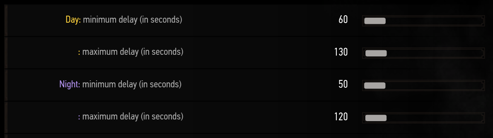
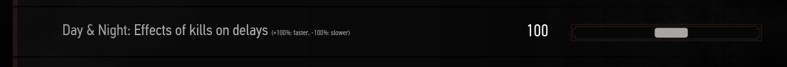
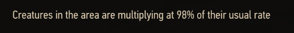
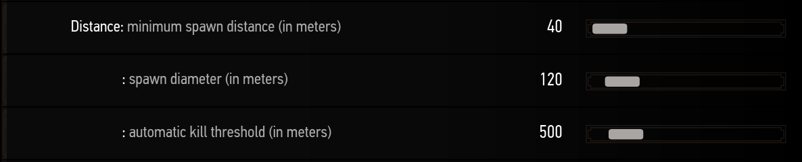
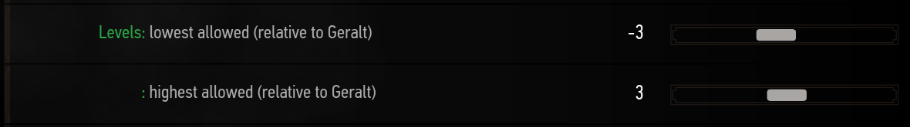
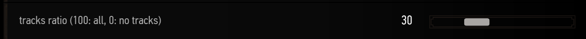

Encounters
Encounters in RER are random groups of creatures that you will come across in your world. These groups are spawned by RER around the player at random intervals. Each of these encounters have different behaviours and do completely different things, you can learn more by looking at their respective pages.
As said earlier, encounters are spawned at random intervals. You can control
this interval with the delay sliders in the Encounters System / General
menu.

You can set different delays for the night and the day, particularely useful
if you want encounters mostly during the night for example. In such case you'd
set the day delays to a really high value like 600 seconds (10 minutes).
There are two sliders for each, the minimum and maximum delay because RER
picks a random value between the two intervals. So with the settings shown in
the image RER will create an encounter at an interval somewhere between 60 and 130 seconds
 Then on top of the default delay sliders, there is a unique slider to add a
custom delay based on your current level: Additional delay (in seconds) per player level.
At a first glance this slider may not seem very useful, but it allows you
to create dynamic delays that progressively get shorter as you progress in the game.
Then on top of the default delay sliders, there is a unique slider to add a
custom delay based on your current level: Additional delay (in seconds) per player level.
At a first glance this slider may not seem very useful, but it allows you
to create dynamic delays that progressively get shorter as you progress in the game.
For example, let's say you want a chill start but a rough ending at around level 50.
You'd set the default sliders to around 300 seconds each and then you would set this slider
to -5. Every time you level up the delays will be shorter by 5 seconds,
that means you will get the following delays in your game:
- 300 seconds at level 0
- 250 seconds at level 10
- 200 seconds at level 20
- 150 seconds at level 30
- 100 seconds at level 40
- 50 seconds at level 50
RER v2.6 also introduces a new slider to control even more the delays and how often creatures are spawned.  This slider controls how much repeatedly killing monsters in an area will affect the delays. RER will then adjust the pace at which it creates new creatures, the default value of 100 means that this feature works at 100% of its intended efficiency. This slider can also go below zero, into negative values to completely invert its effect on the delays.
There are two ways to set this slider as it can go into both positive and negative values.
- The first way are the positive values, the default value. Every time a creature is slain, other creatures' spawn rate will increase. For example if you happen to kill one Ghoul, the spawnrate of creatures in the surrounding ecosystems will now be increased by 1.5%. The more you kill, the faster creatures will respawn. However you should note that creature spawns also affect the spawnrate the same way kills do, but in the opposite direction. Meaning every time a creature will spawn the spawn rate will decrease. This is why the default value for this slider is a positive value, this helps balance the amount of creatures you see in a single area. For example if too many creatures were to spawn around you, RER will then naturally slow down the spawn rate of subsequent creatures. This avoids creature filled with too many creatures if you were to stay in a single area without killing anything. This also allows you to stay in one area and farm the creatures in case you like the ecosystems for example.
- The second way is to go into the negative values. The negative values offer a more immersive option as killing creatures will actually slow down the spawn rate of other creatures, it is like slowly eradicating the lifeforms of an ecosystem. But again it works the opposite way when creatures are spawned, which means that if you let creatures alive for too long this will eventually lead to a point where creatures will spawn at an uncontrolled rate. If you want to use a negative value, i highly suggest to look at the ecosystem menu and set the death rate to a high percentage like 10 or 15%. A percentage of 10% means that the spawn rate will tend to 200% over-time and will not go much higher as creatures of the ecosystem will die faster than they come back.
If you are wondering the state of the surrounding ecosystem and what's the spawn rate in the region, you can use the ecosystem analyse ( setup guide ) which will now include a line with the spawn rate 
You can also control how far encounters are created as encounters are spawned
around you. The distance sliders help you control this.

The first slider: minimum spawn distance controls the distance
at which encounters cannot be created. It is a safe radius around you.
The second slider: spawn diameter is the danger zone after the safe zone
where encounters are created. So with the settings shown in the image encounters
will be created between 40 meters and 160 meters from you.
The last slider: automatic kill threshold tells you at which distance
RER considers an encounter lost and kills it to save performances. Because it is
not guaranteed that creatures from encounters will go towards Geralt, this slider is important.
Creatures from RER are always spawned at Geralt's level, it ensures a pleasant experience.
But you can control their level with the levels sliders.

It is pretty simple, with lowest: -3 and highest: 3 you will get creatures
with a random level around yours but never more then 3 levels above or below yours.
You can set both sliders to +10 and every creatures will be ten levels higher than you.
Static encounters are so simple that they don't deserve their own menu, so their
spawn chance settings were added to this menu.
 If you want to learn more about them, see the static encounters page.
If you want to learn more about them, see the static encounters page.
Creatures from encounters may leave tracks on the ground, this slider controls how often they leave tracks and how dense the trails will be.  A value around 30% will result in vanilla like trails where tracks are placed every few meters. While 100% will result in really dense trails that are easier to follow. But note that RER limits 200 tracks per entity and after the limit is reached it starts recycling old tracks to save performances. With really dense trails the entities will reach the limit really fast and you may see trails disappear in front of your eyes.